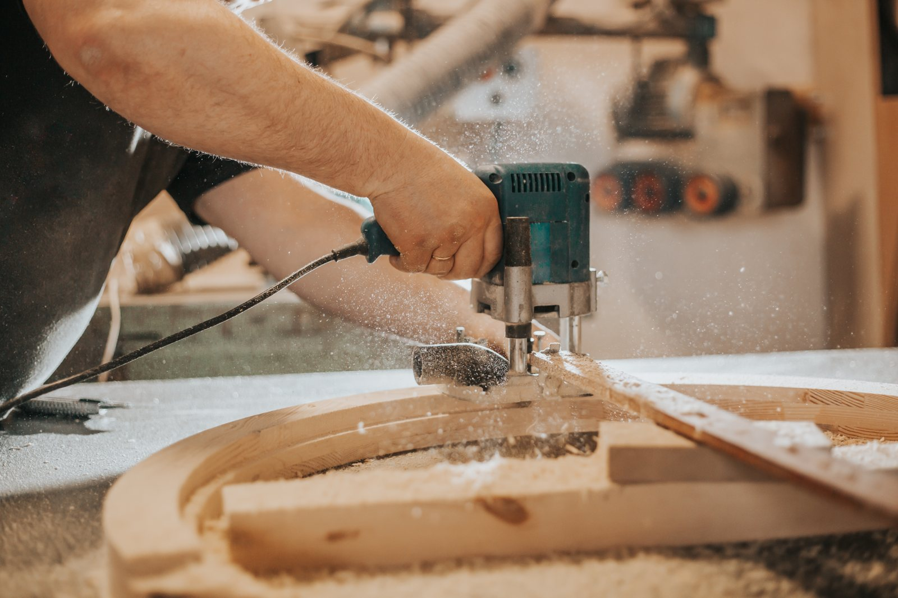
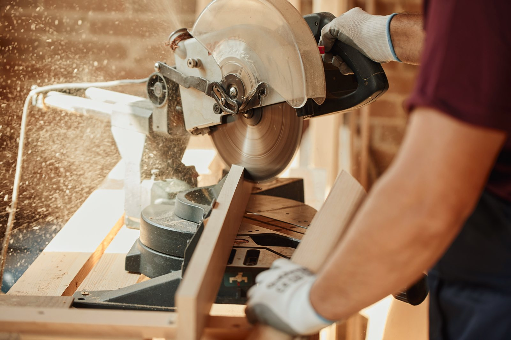

Möbel nach Maß
Tische, Sideboards, Regale und Schränke nach Maß. In massivem Holz oder furniert, sauber verarbeitet und mit langlebigen Oberflächen.
Termin anfragen
Sechs Bereiche, in denen wir Sie zuverlässig betreuen. Saubere Vorbereitung, ruhige Hände und ein besenrein übergebenes Zuhause im Tischlerei- & Innenausbaubetrieb in Soest.
Tische, Sideboards, Regale und Schränke nach Maß. In massivem Holz oder furniert, sauber verarbeitet und mit langlebigen Oberflächen.
Termin anfragenWandverkleidungen, Raumteiler und Wohnraumlösungen aus Holz – passgenau geplant und sauber eingebaut für ein stimmiges, warmes Zuhause.
Termin anfragenInnentüren, Zargen und Sondermaße aus Holz – maßgefertigt, sauber montiert und mit hochwertigen Beschlägen versehen.
Termin anfragenEinbauschränke, Garderoben und Küchen nach Maß – optimal auf Grundriss, Stauraum und Ihren Alltag geplant und gefertigt.
Termin anfragenMassivholzdielen, Parkett und Treppen aus Holz – fachgerecht gefertigt, verlegt und langlebig geölt oder lackiert.
Termin anfragenAufarbeiten, Reparieren und Restaurieren von Möbeln und Holzbauteilen – damit gute Stücke lange erhalten bleiben und ein zweites Leben bekommen.
Termin anfragen
Holz- & MaterialberatungWelches Holz, welche Oberfläche, welche Maße? Wir nehmen uns Zeit, messen Ihre Räume auf und empfehlen, was wirklich passt – damit das Ergebnis Jahre hält und Sie nur für das zahlen, was nötig ist.
Wir melden uns schnell mit einem ehrlichen Festpreis. Tischlerei Buckemüller in Soest.